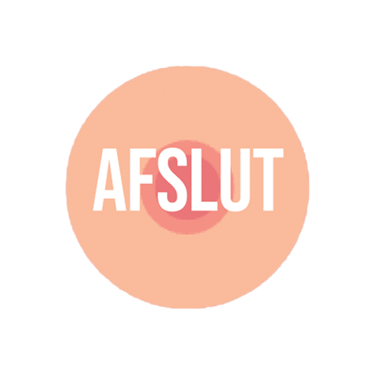

Hvilket udsagn beskriver bedst stadie 3?
A) Brystet er vokset og har fået voksen form
B) Bryst og areola er stadig fladt mod brystvæggen
C) Brystet vokser yderligere uden markant adskillelse mellem bryst og areola
D) Mælkeproduktionen starter
Rigtigt svar: C – I stadie 3 vokser både kirtel- og fedtvæv, men bryst og areola er endnu ikke adskilt. Næste spørgsmål: tryk her
